Project Elements
Duration üïê
April 2020 (6 Hours)
Tools ✒️
Figma, Adobe Illustrator
Team üôã‚Äç
Individual (Personal iOS concept)
01. Project Overview
Background
Design Interactive is UC Davis’ first student-run design group operating at the
intersection of psychology, technology, and problem-solving. We use our diverse skills in social sciences research, prototyping,
and visual design to help solve pressing challenges for businesses and nonprofits.
For this design challenge, prospective applicants were tasked to identify a particular problem or a pain point that college students may have during their transition into college and design a solution on how we would improve this experience.
For this design challenge, prospective applicants were tasked to identify a particular problem or a pain point that college students may have during their transition into college and design a solution on how we would improve this experience.
Objective
Students often encounter many challenges transitioning into college. One of the most common challenges is dealing with financial burdens.
With tuition and living costs, students refrain from buying non-essential items, however, it is common for professors to require extremely
expensive textbooks and supplies for their classes. And accordingly, students turn to online textbook/supply marketplaces. Although this is
a great place for students to buy and sell at affordable prices, it is hassle and frustrating to find what they’re looking for conveniently
and quickly, sometimes leaving them with only one option: to buy new and expensive materials from the campus store.
Tradable is a mobile application that provides college students with a quick, convenient, and easy way to buy and sell used or new textbooks and supplies. It helps alleviate some of the stress that comes with purchasing one-time use course materials. It also provides a space for students to find what they need all in one organized place.
Tradable is a mobile application that provides college students with a quick, convenient, and easy way to buy and sell used or new textbooks and supplies. It helps alleviate some of the stress that comes with purchasing one-time use course materials. It also provides a space for students to find what they need all in one organized place.
Design Challenge Constraints
No more than 5 mockup screens
Use Figma (not required, but highly preferred)
Complete within 4-6 hours
02. User Research
User Interviews
My first approach was to interview three college students to understand their needs and pain points in buying and selling school
supplies. My main interest was finding out:

What frustrations and challenges do they encounter?
Why doesn’t the current system meet their needs?
After talking to three users, here are the key insights I found—
Competitive Analysis
Because all those I interviewed referenced HBO competitors, I decided to analyze what they were doing to engage users that HBO Go might lack.
I focused on two leading competitors, Hulu and Netflix. These series of comparisons will guide me in determining where HBO Go falls short, how they
can rise up to market standards, and what they can do to differentiate itself from its competitors.
Navigation


Previews & trailers
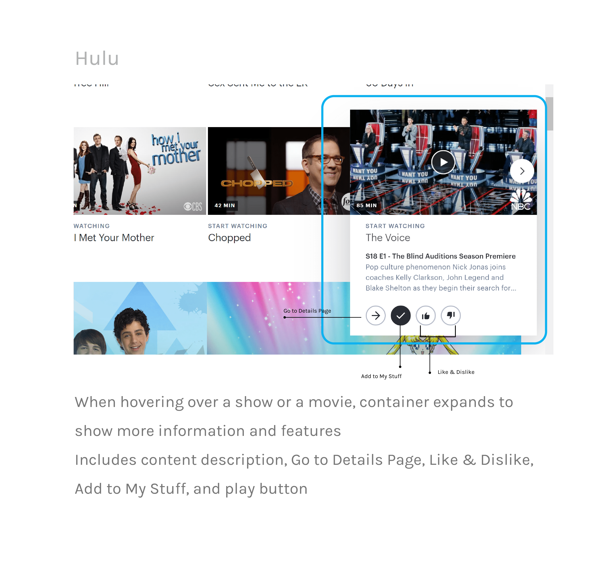
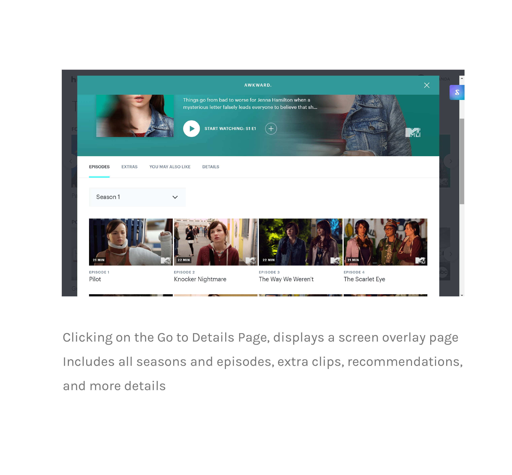


Content layout


Video Playback

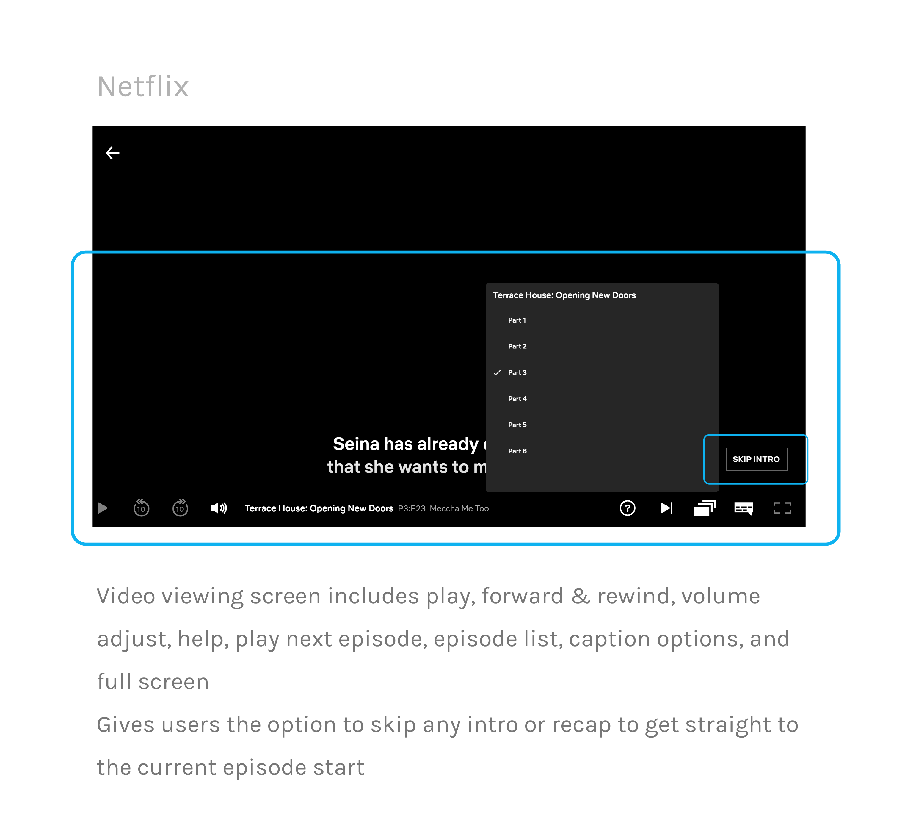
Individual Preferences
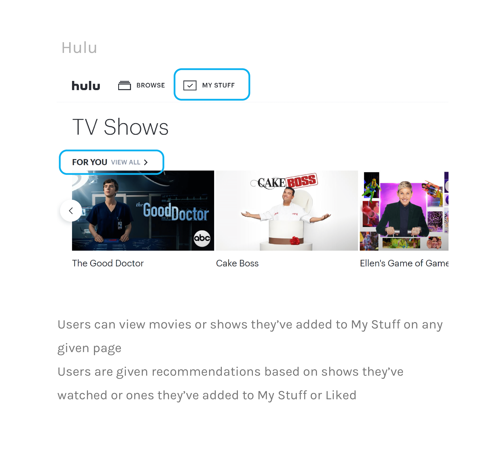

Primary Concerns
After collecting these interview responses and examining competing platforms, I was able to reduce these insights down into three primary concerns that my redesign
of HBO Go will tackle.
Lack of individualized content
There is an absence of personalized content curation (i.e. recommendations), thus creating a sense of distance
Feels like a one-time use platform
The interface is uninviting and unmemorable
The layout of content is exactly the same throughout the entire page, which feels unexciting
and causes viewers to quickly scroll through without wanting to explore
Little to no assistance in guiding and informing users
Users are forced to hunt for their desired content because of the lack of content descriptions,
play next buttons, and other essential features that make for an easy watching experience
There's a lack of previews/trailers that would interest the users
03. Ideation
Sketches
 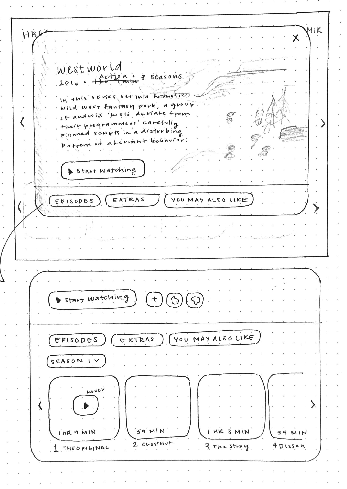
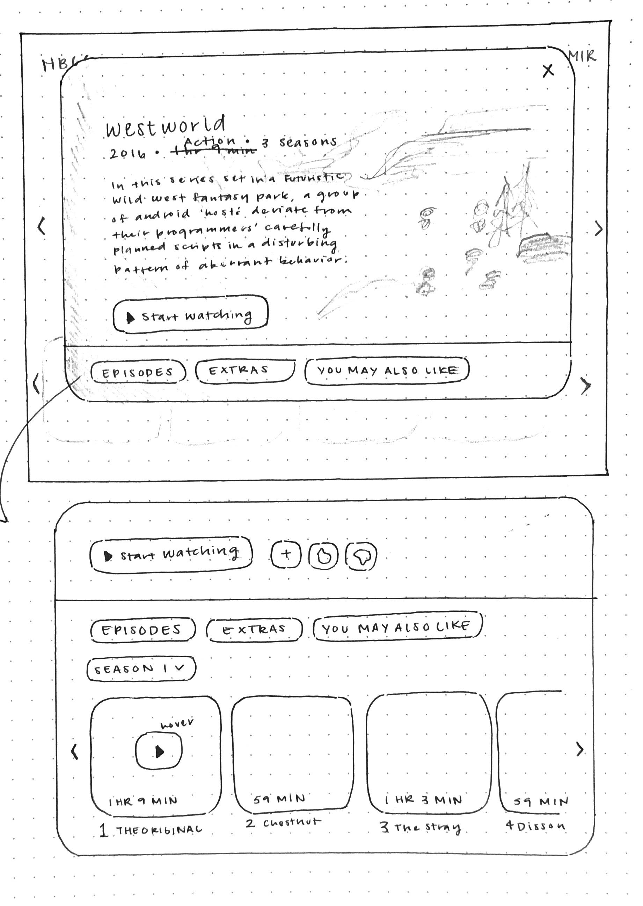

04. Prototyping
Wireframes
I took the initial sketches and translated them into simple wireframes. I was able to
explore different layouts that best displayed the information to the user and ease their
watching experience. I added many features that I deemed suitable in aiding the viewer and minimizing
the frustration that many users expressed in their interviews and reviews.
 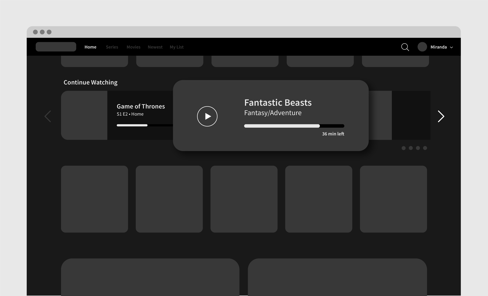
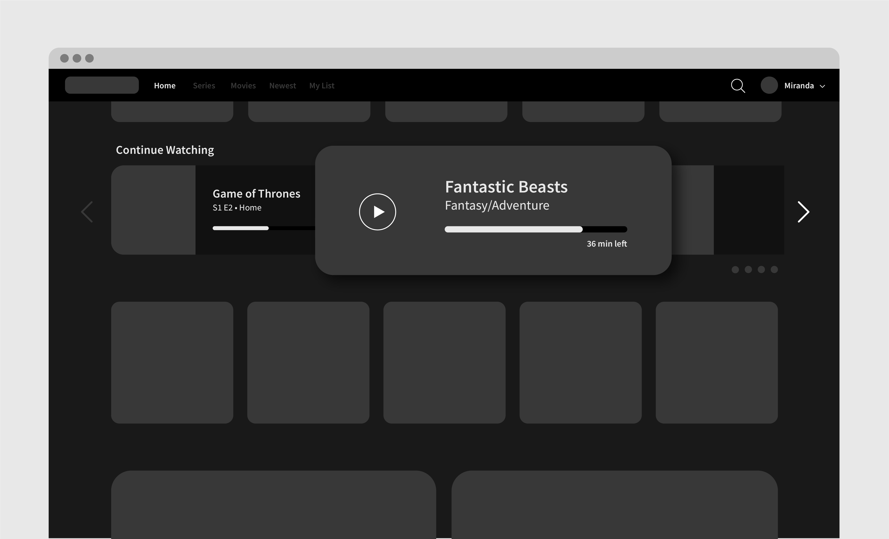
 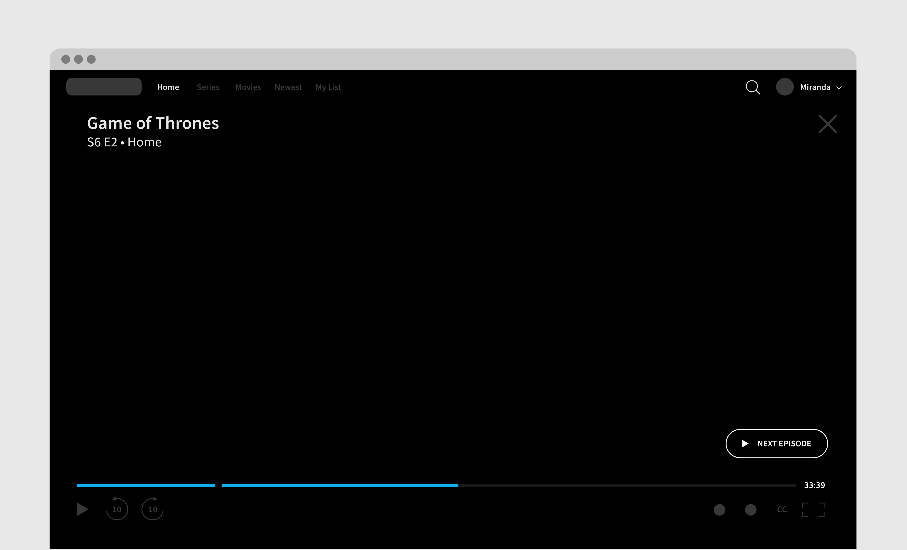
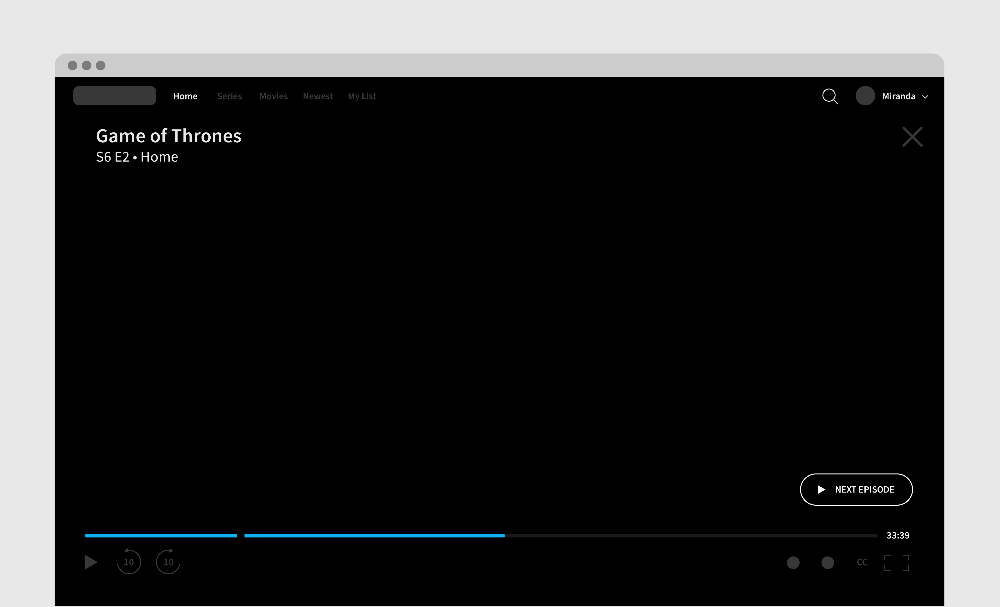
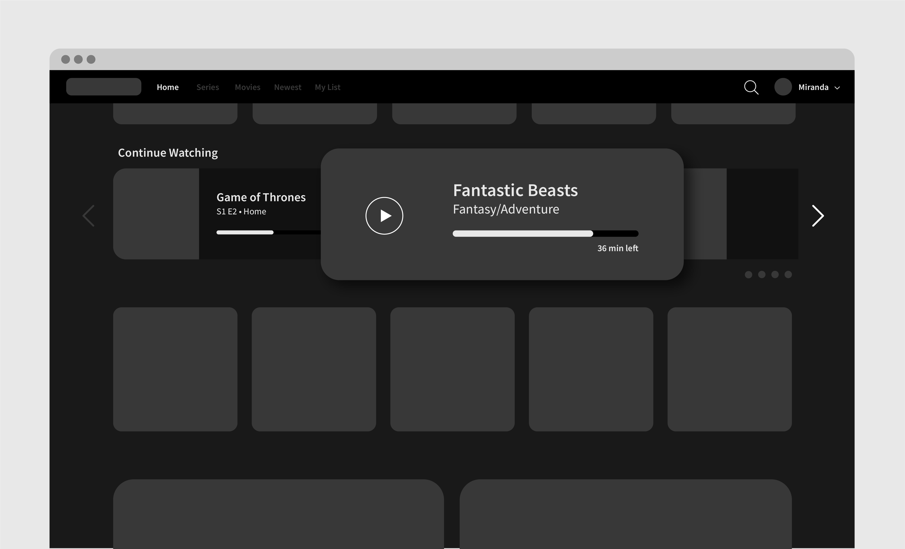
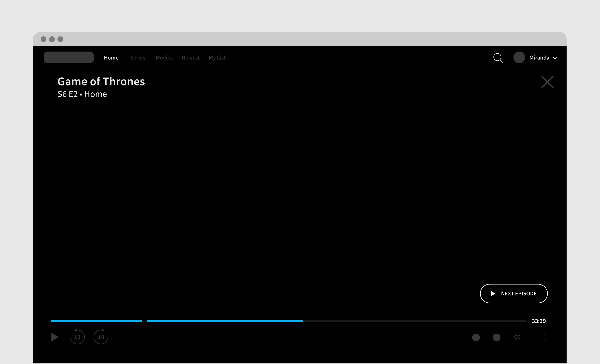
High-Fidelty Prototype
For the final prototype design, I wanted to ensure that I continued the night time/dark theme that HBO Go applies across all platforms
to maintain their brand identity despite updating the overall interface. Like mentioned throughout my process, I hoped to build this redesign
around the users and integrate systems and features that would ease their watching experience. Ultimately, I wanted the user
to feel like a more valued customer and excited to explore all the content that HBO Go has to offer.


The design I decided on for the video playback screen incorporated features that users expressed would make the viewing experience much easier. Similar to
Netflix's "skip intro" button that pops up before every media content, I wanted users to have that option. The break in the playback bar indicates where
the actual episode begins and users can jump straight to that point if they choose. I hoped that this would eliminate the frustration of fast-forwarding
and guessing where the intro ends the episode starts. In addition, I made sure to add a "play next episode" feature that pops up when the viewer is nearing
an appropriate time at the end of an episode to ensure that the viewing experience is not disrupted by excessive clicking around to search for the desired content.

05. Reflection
Lessons & Takeaways
What was most significant about this project was that I was able to analyze existing systems and explore ways of improving them. Especially conducting
the competitive analysis study, I was able to really understand why HBO Go's competitors' were so successful and users were engaged with their products.
A lot of excitement I experience with being a designer comes from designing for others in mind and this project has fueled that interest, while also
teaching me about how to design for understanding as the end goal.
In the future, if I were to have time to come back to this project, I would like to produce a few more iterations and test the level of usability across a more broad audience. I would also like to redesign the mobile app as well to create a stronger connection between HBO Go's web and mobile platforms. I would Like to be able to think more deeply about their on-demand access to content and how to best implement that for different mediums, whether that be mobile, web, television, etc.
In the future, if I were to have time to come back to this project, I would like to produce a few more iterations and test the level of usability across a more broad audience. I would also like to redesign the mobile app as well to create a stronger connection between HBO Go's web and mobile platforms. I would Like to be able to think more deeply about their on-demand access to content and how to best implement that for different mediums, whether that be mobile, web, television, etc.